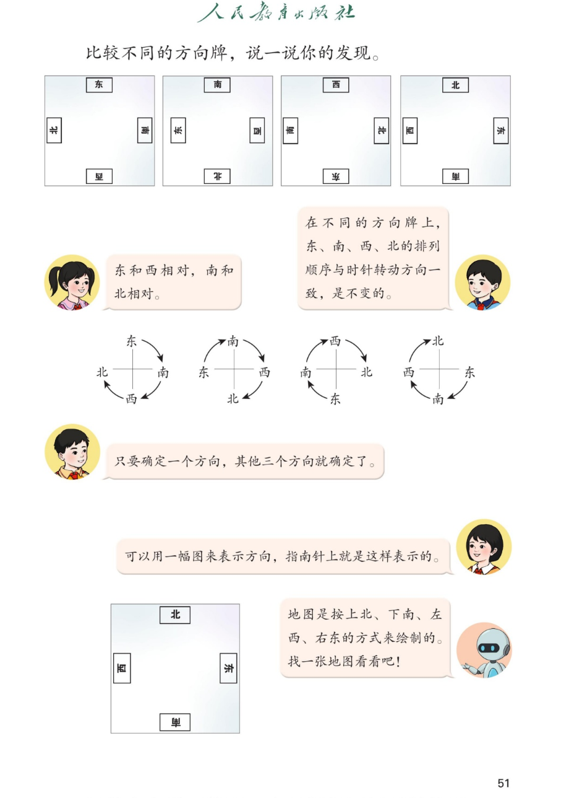

🔊 综合与实践 · 校园小导游 · 课本第 51 页 · 比较不同的方向牌
人教版《数学》二年级上册 · 有声图文带读 · 先想后看解析 · 顺时针规律与地图方向
题数
6
认知
2
强化
3
拓展
1
本页重点
东西南北相对 · 顺时针排列不变 · 地图上北下南左西右东
🎧 分两步学：
① 解析教材图片
——纯声音读图，读到哪一块哪一块闪动提示；关键处先倒计时让你思考，再在图片下方给出解析并朗读。
② 分层提问练习
——六道分层题（认知 / 强化 / 拓展），先思考再展开解析、朗读参考答案；这一步不再回到图片。
也可以随时点任意一句话、图上任意一块单独听；点课本文字卡还会展开答案。
教材图片（点块听读，读到哪块哪块闪）

📖 人教版《数学》二年级上册 · 课本第 51 页 · 图片仅供个人学习，版权归人民教育出版社所有
🤔 想一想（点我可跳过）
课本的文字（点句子：听读 + 看答案）
发现一
东和西相对，南和北相对
看答案 ▾
不管方向牌怎么转：
东↔西
相对、
南↔北
相对；
面向一个方向时，背后一定是它的相对方向；
🌈 相对关系永远不变
发现二
排列顺序与时针转动方向一致
看答案 ▾
按
顺时针
（时针转动方向）依次是：
东 → 南 → 西 → 北
；
方向牌无论怎么转，这个顺序
都不会变
；
🌈 顺时针数一圈：东南西北
发现三
确定一个方向，其他三个就确定了
看答案 ▾
知道一个方向 + 相对关系 + 顺时针顺序；
例：前面是
北
→ 后面
南
、左面
西
、右面
东
；
例：右面是
南
→ 前面
东
、后面
西
、左面
北
。
地图规则
上北 · 下南 · 左西 · 右东
看答案 ▾
所有地图都按
上北、下南、左西、右东
绘制；
看地图先找方向标"北"；
会看地图，小导游就能带着大家走遍校园！
分层提问练习（先想后看解析）
↔️
认知
观察四张方向牌，哪两个方向总是相对？
看解析
🤔 想一想
解析：
东与西
相对，
南与北
相对。
相对关系不随方向牌转动而改变。
🗺️
认知
地图是按什么方式绘制的？
看解析
🤔 想一想
解析：
上北、下南、左西、右东
。
看地图先找"北"，其他三个方向就都定了。
🔄
强化
"东"朝上的方向牌转半圈后，哪个字朝上？
看解析
🤔 想一想
解析：
西
朝上；
转半圈上下调换，东和西
相对
，所以西跑到上面。
⏰
强化
为什么方向牌怎么转，四个方向的排列顺序都不变？
看解析
🤔 想一想
解析：
顺序与
时针转动方向一致
：顺时针是东→南→西→北；
牌转的时候四个字
一起转
，相对位置不变，顺序就不变。
🧭
强化
只知道"前面是北"，能确定其他三个方向吗？
看解析
🤔 想一想
解析：
能：后面
南
（相对），左面
西
、右面
东
（顺时针）；
确定一个方向，其他三个方向就都确定了。
🌈
拓展
东南西北的顺时针顺序，像钟表上的什么？说说你的发现。
看解析
🤔 想一想
解析：
像时针转圈：
东→南→西→北
正好转一整圈；
就像 12 点→3 点→6 点→9 点，永远按这个顺序走。
🌈 记住"顺时针东南西北"，方向永远不会乱
① 解析教材图片
② 分层提问练习
⏹ 停止
纯声音 + 高亮跟随 · 想好才出解析
← 返回导航